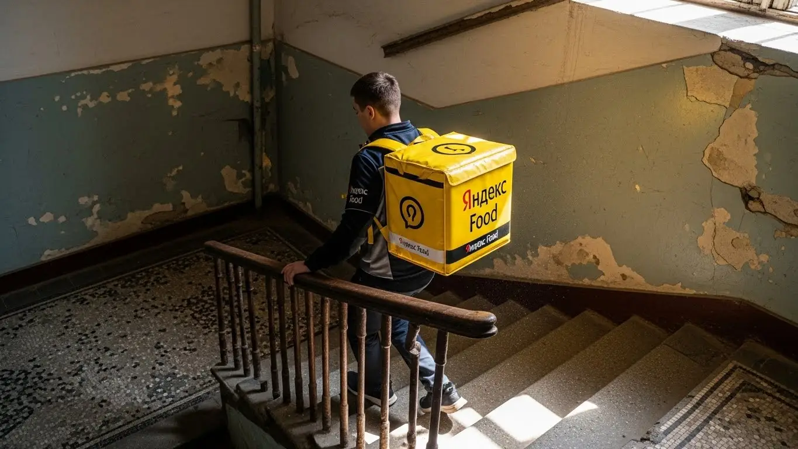

Реальный доход курьера Яндекс Еды в Красногорске 2025-2026
- Работа курьером Яндекс Еды в Красногорске: для кого эта вакансия и что вы получите
- Сколько вы будете зарабатывать курьером в Красногорске: калькулятор дохода и разбор выплат
- Реальный заработок курьера в Красногорске: смены и месячный доход
- График работы и форматы занятости
- Требования к кандидату и документы
- Самозанятость, налоги и юридическая чистота
- Пошаговое оформление и первый выход на линию в Красногорске
- Пешком, на вело или на авто: что выгоднее в Красногорске
- Районы, маршруты и «топовые» зоны заказов в Красногорске
- Безопасность, страховка, штрафы и оплата простоя
- Плюсы и возможные минусы работы курьером в Красногорске
- Реальные истории и отзывы курьеров из Красногорска
- Ответы на главные вопросы о работе курьером Яндекс Еды в Красногорске
- Короткие ответы на главные вопросы
- Заключение: твой старт в Красногорске
Все города
Думаешь, работа курьером в Красногорске — это просто сел на велик и поехал рубить бабло? А как насчет вечных пробок на Волоколамке, убитых дорог в частном секторе и заказов, которые ведут тебя в глухую промзону в час пик? Если ты смотришь на вакансии и боишься, что в итоге заработаешь копейки, заплатив кучу штрафов и оставив половину зарплаты на бензин, то ты попал по адресу. Забудь про общие статьи. Здесь мы говорим только про Красногорск, про нашу реальность.
Поверь, 9 из 10 новичков в Красногорске сливаются в первый же месяц, потому что рекламные обещания Яндекса разбиваются о суровую городскую логистику. Они не учитывают, что чистый доход — это не цифра в приложении. Это то, что осталось после вычета налога самозанятого, расходов на транспорт и обед. Они не знают, как работает приоритет и почему одним сыпятся дорогие заказы из Павшинской поймы, а другие возят мелочь по старым пятиэтажкам. В итоге — разочарование, потраченное время и ощущение, что тебя обманули.
В этом гиде я разложу всё по полочкам. Мы честно посчитаем, сколько реально можно заработать пешком, на велике или авто именно в Красногорске. Я покажу на карте, где самые «жирные» зоны и в какое время лучше выходить на линию. Разберём, как погода и пробки влияют на доход, за что на самом деле прилетают штрафы и как их оспорить. Чтобы увидеть краткую сводку условий, калькулятор дохода и сразу подать заявку, загляните на официальную страницу: работа курьером Яндекс Еда в Красногорске. А здесь мы сравним условия с другими доставками, которые работают у нас в городе, и посмотрим на реальные отзывы парней, которые крутят педали и баранку прямо сейчас.
Меня зовут Алексей. Я сам начинал с желтой сумкой на спине, а сейчас у меня свой небольшой таксопарк-партнер. Я видел эту кухню со всех сторон и знаю каждый закоулок Красногорска лучше, чем свой карман. Так что никакой рекламной шелухи и обещаний золотых гор. Только мясо, только факты и личный опыт. Сейчас всё разложу по полочкам.
Чтобы ты не запутался, я накидал короткий навигатор по статье. Пробегись глазами, чтобы сразу найти самое важное.
Что ты точно узнаешь из этого разбора
В этой статье ты ТОЧНО узнаешь:
- Сколько реально можно заработать в Красногорске за смену, и как погода и пробки влияют на доход?
- В каких районах — от Павшинской поймы до Опалихи — больше всего заказов и как ловить «фиолетовые зоны»?
- За что на самом деле штрафуют и как работает бесплатная страховка, если что-то случится на смене?
- Как за 10 минут оформить самозанятость и можно ли работать курьером с 16 лет?
- Что такое оплата простоя и как она защищает твой заработок, если заказов вдруг стало мало?
- Как правильно планировать слоты в «Яндекс Про», чтобы работать меньше, а зарабатывать больше?
А если тебе некогда читать всю статью — переходи сразу к заключению, где ты найдёшь короткие ответы на все эти вопросы и указания, в каких разделах искать подробности.
А для наглядности — основные цифры по работе в Красногорске.
Работа курьером в Красногорске: ключевые цифры
Доход в час
350–500 ₽
В часы пик, с учетом бонусов и коэффициентов
За смену (8 часов)
2 800–4 000 ₽
Зависит от спроса, погоды и выбранного района
Расходы на смену
200–400 ₽
На питание и транспорт (для вело/авто)
Чаевые от заказов
15–25%
Доля заказов, с которых клиенты оставляют чаевые
Работа курьером Яндекс Еды в Красногорске: для кого эта вакансия и что вы получите
Кому подойдёт эта работа в Красногорске
Давай начистоту: эта работа не для всех, но для многих — настоящая находка. В первую очередь, это идеальный вариант для студентов. График можно подстроить под лекции, а ежедневные выплаты получать на карту — на жизнь, съём квартиры или развлечения хватит. Если у тебя уже есть основная работа, но нужны дополнительные деньги, доставка — отличная подработка. Вышел на пару часов вечером или откатал все выходные — вот тебе и прибавка к зарплате.
Эта вакансия также для тех, у кого пока нет опыта работы. Здесь не нужен диплом или длинное резюме, всему научат за пару часов. Главное — быть адекватным, ориентироваться на местности и иметь смартфон. Курьеры на своём авто тоже найдут здесь выгоду: заказов много, можно работать по всему городу и пригороду, а доход будет выше, чем у пеших. В общем, если тебе важен свободный график, быстрые выплаты и ты не хочешь сидеть в офисе — это твой вариант.

Главные преимущества для жителей районов Павшинская пойма, Чернево и Опалиха
Главный плюс работы в Красногорске — не нужно каждый день мотаться в Москву и обратно, теряя время и деньги в пробках или электричках. Ты можешь работать буквально в своём районе. Живёшь в Павшинской пойме? Отлично, здесь много ресторанов, кафе и магазинов, поэтому заказы есть всегда. Вышел из подъезда, включил приложение «Яндекс Про» и через пять минут уже несёшь первый заказ.
То же самое касается и других крупных районов. Например, в Чернево-1 или в Опалихе тоже полно работы. Не нужно ехать через весь город, чтобы начать смену. Ты доставляешь заказы по знакомым улицам, знаешь все короткие пути и где лучше срезать. Это экономит не только время, но и силы, а значит, за смену ты успеваешь выполнить больше доставок и, соответственно, больше заработать.
Краткое обещание по доходу и условиям
Если говорить о деньгах, то цифры в Красногорске вполне приличные. Активный курьер за смену 8–10 часов может заработать от 3000 до 5000 рублей. Если это подработка на 3–4 часа в день, то рассчитывай на 1500–2500 рублей. В месяц при полной занятости можно спокойно выходить на доход в 70 000 – 90 000 рублей и даже больше, особенно если работать на автомобиле в пиковые часы.
Самое важное — условия работы прозрачные. Ты работаешь, когда хочешь, выбирая удобные слоты в приложении. Ежедневные выплаты приходят на карту, не нужно ждать конца месяца. И повторюсь, для старта не требуется никакого опыта — всему научат на коротком онлайн-инструктаже. Просто заполняешь анкету, и уже на следующий день можешь выйти на линию и получить свой первый доход.
Вот живой пример: парень-студент, который живёт в Павшинской пойме. Он учится днём, а с шести вечера выходит на 3-4 часа на велосипеде. Катается по своему району, развозит заказы из местных пиццерий и суши-баров. За вечер у него выходит в среднем 1800-2000 рублей. В выходные работает подольше, часов по 6-7, и зарабатывает по 3500-4000. В итоге за месяц набегает около 50 тысяч — на съём комнаты и личные расходы ему хватает с головой, и при этом учёбу не запускает.
Работа курьером в Красногорске — это реальная возможность зарабатывать без начальника и жёсткого графика, особенно если работать рядом с домом. Мой совет: если живёшь в густонаселённом районе, начни именно с него — так быстрее втянешься и поймёшь, как всё устроено.
Сколько вы будете зарабатывать курьером в Красногорске: калькулятор дохода и разбор выплат
Из чего складывается доход курьера
Твой заработок — это не просто фиксированная ставка, а конструктор из нескольких частей. Во-первых, есть базовая оплата за каждый выполненный заказ. Во-вторых, к ней добавляется плата за расстояние — чем дальше нести или везти, тем больше денег. В-третьих, в часы пик (вечера, выходные, плохая погода) включаются повышающие коэффициенты. Карта в приложении «Яндекс Про» окрашивается в яркие цвета, и в этих зонах за тот же самый заказ можно получить в 1.5-2 раза больше.
Кроме этого, есть бонусы за выполнение определённого количества заказов в день или неделю — это как премия за хорошую работу. Не стоит забывать и про чаевые от клиентов, которые полностью идут тебе в карман. И самое главное, что отличает Яндекс от многих других сервисов, — это оплата простоя. Если ты вышел на плановый слот, а заказов мало, сервис всё равно начислит минимальную гарантированную сумму. Иногда также действует компенсация проезда на общественном транспорте, если заказ очень дальний.
Как пользоваться калькулятором дохода
На сайте есть специальный калькулятор — это не просто игрушка, а полезный инструмент для планирования. Пользоваться им элементарно. Сначала выбираешь свой город — Красногорск. Затем указываешь, как планируешь доставлять: пешком, на велосипеде или на своём авто.
Дальше двигаешь ползунки: сколько часов в день и сколько дней в неделю ты готов работать. Например, ставишь 4 часа в день, 5 дней в неделю. Калькулятор мгновенно обработает эти данные и покажет примерный диапазон твоего возможного заработка за день и за месяц. Это, конечно, не стопроцентная гарантия, но очень точный ориентир, который поможет понять, на какие цифры можно рассчитывать при разной загрузке.
Калькулятор дохода курьера в Красногорске
Примерный доход в месяц:
64 000 ₽
Расчёт является примерным и основан на средней ставке для Красногорска. Реальный доход зависит от спроса, бонусов и вашего графика.
Чтобы прикинуть цифры точнее и посмотреть все актуальные условия, загляни на официальную страницу: работа курьером Яндекс Еда в твоём городе. Там же найдёшь ответы на частые вопросы и сможешь сразу подать заявку.
Примеры расчёта для пешего, вело- и авто‑курьера в Красногорске
Давай на конкретных примерах, чтобы было понятнее.
- Пеший курьер. Ты студент и решил подработать в центре Красногорска, в районе улицы Ленина и ТЦ «Красный Кит». Выходишь на 4 часа в обеденный пик, с 12 до 16. Заказов в это время много. В среднем за такую смену можно сделать 1600–2200 рублей. Работая так 5 дней в неделю, за месяц получишь около 35 000–45 000 рублей.
- Велокурьер. Ты живёшь в Чернево и работаешь по вечерам и выходным, по 6-7 часов. На велосипеде ты быстрый, легко маневрируешь между домами и дворами, доставляя заказы по всему району и в соседние. За такую смену твой доход может составить 2800–3800 рублей. В месяц при таком графике выходит 60 000–75 000 рублей. Плюс фитнес бесплатный.
- Авто-курьер. У тебя есть машина, и ты готов работать полный день, 8–10 часов. Ты можешь брать не только городские заказы, но и дальние — в Нахабино, Опалиху или даже в Истру. Такие заказы оплачиваются гораздо выше. В хороший день, особенно в плохую погоду, твой заработок может достигать 5000–7000 рублей. За месяц вполне реально заработать 100 000–120 000 рублей. Из этой суммы, конечно, нужно вычесть расходы на бензин.
У меня есть знакомый, который начинал в Красногорске на велосипеде. Летом всё было отлично, зарабатывал по 60-70 тысяч. Но как только похолодало и пошёл снег, он понял, что на двух колёсах уже не вариант. Пересел на свою старенькую «Ладу». Сначала сомневался из-за расходов на бензин. Но в первую же неделю понял, что не прогадал: стал брать дорогие заказы из гипермаркета «Глобус», возить крупногабаритные посылки, которые раньше были ему недоступны. Его средний дневной заработок вырос с 3000 до 5000 рублей, и даже с учётом бензина он стал получать в месяц на 30-40 тысяч больше.
Как видишь, твой доход напрямую зависит от того, как, где и сколько ты работаешь. Поэтому перед началом работы поиграй с калькулятором, прикинь разные сценарии. А когда выйдешь на линию, всегда следи за картой спроса в «Яндекс Про» — именно в «горящих» зонах с высокими коэффициентами и кроются самые большие деньги.

Реальный заработок курьера в Красногорске: смены и месячный доход
Теперь давай без калькуляторов, а про реальные деньги, которые оказываются в кармане. В Красногорске, как и в других городах, твой доход в сервисах вроде Яндекс Еды зависит от трёх вещей: как ты работаешь (пешком, на велосипеде или авто), сколько часов тратишь и насколько умно подходишь к делу. Здесь нет фиксированной зарплаты, твой заработок — это сумма выполненных заказов, бонусов и чаевых.
Цифры могут сильно плавать, но я дам реальные ориентиры, на которые можно рассчитывать. Не стоит верить рекламным обещаниям про сотни тысяч в месяц с первого дня — это возможно, но требует опыта и полной отдачи. Для начала нужно понять, из чего складывается доход и как на него влиять. Главное преимущество таких условий работы — ежедневные выплаты, так что результат своего труда ты видишь на карте почти сразу.
Диапазон дохода для подработки и полной занятости
Если ты ищешь подработку на несколько часов в день, чтобы закрыть кредит или на что-то накопить, цифры будут одни. Если же это твоя основная работа, то совсем другие. Давай разберём на конкретных примерах, сколько зарабатывает курьер в Красногорске.
- Подработка (2–4 часа в день):
- Пеший курьер: Выходя на 3–4 часа в вечерний пик, можно стабильно делать 1000–1800 рублей за смену. В месяц это выливается в 25 000–40 000 рублей, если работать 5 дней в неделю. Идеально для студентов или как дополнение к основной зарплате.
- Курьер на велосипеде: Ты мобильнее, поэтому за те же 3–4 часа твой доход будет выше — примерно 1500–2500 рублей. В месяц это уже 35 000–55 000 рублей.
- Курьер на своем авто: На машине за короткую смену можно заработать больше всего, особенно если брать заказы на дальние расстояния, например, в Нахабино или Опалиху. Реальный доход за 4 часа — 2000–3500 рублей. В месяц выходит 45 000–70 000 рублей, но не забывай вычитать расходы на бензин.
- Полная занятость (8–10 часов в день):
- Пеший курьер / Велокурьер: При полном дне доход пешего курьера в Красногорске может достигать 3000–4500 рублей, у курьера на велосипеде — 4000–6000 рублей. В месяц это 70 000–120 000 рублей «грязными».
- Курьер на автомобиле: Здесь заработок самый серьёзный. Работая по 8–10 часов, можно делать 5000–8000 рублей в день. Месячный доход автокурьера при полной занятости составляет 110 000–160 000 рублей до вычета расходов.
Как район, время суток и погода влияют на доход
Запомни простое правило: где людям лень выходить из дома или офиса, там твои деньги. Спрос на доставку неравномерен, и твоя задача — быть там, где он максимальный. В приложении «Яндекс Про» такие зоны подсвечиваются фиолетовым — это значит, что там действуют повышающие коэффициенты.
Ключевые факторы, которые умножают твой заработок:
- Время суток: Самые «жирные» часы — это обеденный пик (с 12:00 до 15:00) и вечерний (с 18:00 до 21:00). В это время люди активно заказывают готовую еду через Яндекс Еду, и заказов очень много. В выходные дни высокий спрос держится почти весь день.
- Район: В Красногорске больше всего заказов в густонаселённых районах вроде Павшинской Поймы, Чернево-1 и в центре, рядом с ТЦ «Красный Кит» или «Июнь». Там много и жилых домов, и офисов, и ресторанов.
- Погода: Дождь, снегопад или сильная жара — твой лучший друг. Количество заказов в доставке взлетает, а вместе с ним и коэффициенты. Клиенты в такую погоду охотнее оставляют чаевые, потому что ценят твой труд. Если не боишься промокнуть или замёрзнуть, можешь за одну такую смену заработать как за две обычные.
Советы по увеличению заработка от опытных курьеров
Просто кататься по городу в ожидании заказа — стратегия так себе. Чтобы зарабатывать больше, нужно думать головой и планировать свои выходы. Вот несколько проверенных советов, которые помогут увеличить доход без лишних переработок.
Во-первых, всегда смотри на карту спроса в «Яндекс Про» перед выходом. Не ленись доехать до «фиолетовой» зоны, даже если она в паре километров. Эти 15 минут окупятся повышенной стоимостью заказов. Во-вторых, бери плановые слоты. Это гарантирует тебе минимальный доход, даже если заказов будет мало, плюс даёт приоритет при их распределении.
И ещё один лайфхак: сочетай форматы. Если у тебя есть и велосипед, и машина, используй их по ситуации. В час пик, когда центр Красногорска и Волоколамка стоят, велик будет быстрее. А для дальних заказов в область или в плохую погоду лучше брать машину. Гибкость — твой ключ к хорошему заработку.
Вот недавний пример из практики. Парень-автокурьер работал в пятницу вечером. Начал в районе Павшинской Поймы, где всегда высокий спрос, и за три часа сделал около 2500 рублей. Потом пошёл сильный дождь, и он увидел в приложении зону с высоким коэффициентом в районе Опалихи. Он поехал туда и за следующие два часа, развозя заказы по частному сектору, заработал ещё 3000 рублей. Итог за 5 часов — 5500 рублей.
В общем, твой заработок в Красногорске напрямую зависит от твоего подхода. Можно просто выполнять заказы по мере их поступления, а можно анализировать спрос, погоду и выбирать самые выгодные зоны и время. Всегда следи за картой в приложении и не бойся плохой погоды — именно она приносит самые большие деньги.

График работы и форматы занятости
Одно из главных преимуществ работы курьером в Яндексе — свободный график. Ты сам себе начальник и решаешь, когда и сколько работать. Хочешь — выходи на пару часов вечером после основной работы, хочешь — работай полный день с перерывом на обед, когда тебе удобно. Никто не будет стоять над душой и контролировать каждый твой шаг.
Эта гибкость особенно важна для студентов, молодых родителей или тех, кто совмещает несколько дел. Ты можешь планировать свои смены (в приложении они называются «слоты») на неделю вперёд или выходить на линию спонтанно, когда появилось свободное время и есть хороший спрос. Главное — понимать, как разные форматы занятости работают на практике.
Подработка после учёбы или основной работы
Совмещать доставку с чем-то ещё — самый популярный сценарий. Такая подработка курьером — отличный способ получить дополнительный доход, не меняя кардинально свою жизнь. Вот пара реальных примеров, как это устроено у ребят в Красногорске.
- Пример 1: Студент. Парень учится в Красногорском колледже. Учёба заканчивается в 15:00–16:00. Он приезжает домой, отдыхает час и в 17:00 выходит на велослот на 4 часа. Работает в своём районе, в Чернево, развозит заказы из местных пиццерий и магазинов вроде Яндекс Лавки. За вечер стабильно делает 1800–2200 рублей. В неделю выходит 4-5 таких смен, что даёт ему около 40 000 рублей в месяц — отличные деньги на карманные расходы.
- Пример 2: Офисный работник. Мужчина работает в Москве, живёт в Красногорске. Возвращается домой около 19:00. Ужинает и в 20:00 выезжает на машине на 2–3 часа. Берёт заказы из гипермаркета «Глобус» или ресторанов в ТРЦ «Vegas Крокус Сити». За счёт больших чеков и дальних доставок за короткую смену зарабатывает 1500–2000 рублей. Работает так 3–4 раза в неделю, получая дополнительно 20 000–25 000 рублей в месяц.
Полная занятость: как выглядит типичный день курьера
Если ты решил сделать доставку своей основной работой, твой день будет выглядеть более структурированно. Типичный день курьера на полной занятости в Красногорске начинается не с самого утра, а ближе к обеденному пику, чтобы не тратить силы впустую.
Обычно курьер выходит на линию около 11:00. Сначала заказов немного, можно спокойно развозить документы или посылки через сервис Яндекс Доставка. К 12:30 начинается обеденный бум: заказы из кафе и ресторанов в центре города и около бизнес-центров идут один за другим. Этот пик длится до 15:00. После этого наступает затишье, которое можно использовать для обеда и отдыха.
Второй, самый мощный пик, начинается около 18:00 и продолжается до 21:00–22:00. В это время идут заказы ужинов из Яндекс Еды и продуктов из магазинов. Опытные курьеры, взяв термокороб, стараются работать именно в эти два пиковых интервала, а в остальное время либо отдыхают, либо выполняют менее срочные доставки.
Как планировать слоты и выходы через приложение «Яндекс Про»
Вся твоя работа строится через приложение «Яндекс Про». Это твой командный центр, где ты видишь заказы, карту спроса, свой доход и график. Есть два основных типа работы: свободные выходы и плановые слоты. Свободный выход — это когда ты просто нажимаешь кнопку «На линию» и начинаешь получать заказы. Удобно, если появилось незапланированное свободное время.
Плановые слоты — это когда ты заранее бронируешь время и район, в котором будешь работать. Например, с 18:00 до 22:00 в Павшинской Пойме. Плюсы плановых слотов очевидны: у тебя будет приоритет в получении заказов, а также гарантированная минимальная оплата за час, даже если заказов будет мало. Это твоя страховка от простоя.
Крайне важно не опаздывать на забронированный слот, так как это влияет на твой рейтинг активности. Чем выше рейтинг, тем лучше заказы ты получаешь — это одно из ключевых условий работы. Поэтому планируй время с запасом, чтобы быть в нужной зоне за 5–10 минут до начала смены.
Вот реальный пример про планирование. Один из водителей-курьеров, новичок, поначалу выходил на линию хаотично. Зарабатывал немного, часто стоял без дела. Я посоветовал ему попробовать плановые слоты. Он начал бронировать себе вечерние смены с 19:00 до 23:00 в зонах с высоким спросом. Уже в первую неделю его средний дневной доход вырос почти в полтора раза, потому что система видела его надёжность и давала заказы в первую очередь.
В итоге, грамотное планирование — это 50% успеха. Используй «Яндекс Про» по максимуму: изучай карту спроса, бронируй выгодные слоты и будь пунктуален. Это позволит тебе работать не больше, а умнее, и, соответственно, больше зарабатывать.
Требования к кандидату и документы
Многих новичков, которые ищут подработку или основную занятость, пугает, что для работы курьером нужна кипа бумаг и особые навыки. На деле всё гораздо проще. Давай разберём, какие условия и требования действительно важны, чтобы у тебя не было сюрпризов.
Возраст, гражданство и базовые условия
Основное требование — тебе должно быть 18 лет. Это стандартный возраст для оформления самозанятости. По гражданству тоже всё просто: подойдёт паспорт РФ или одной из стран ЕАЭС (Беларусь, Казахстан, Армения, Киргизия). Никаких специальных разрешений на работу в этом случае не нужно.
Что касается физической формы, то для старта не нужен опыт или олимпийские рекорды. Но будь готов к активности: работа пешим курьером проходит на ногах, а велокурьером — на велосипеде. Если ты можешь без проблем пройти несколько километров или проехать по городу, то точно справишься. Для курьеров на автомобиле, само собой, нужно водительское удостоверение и исправная машина. В целом, если нет серьёзных медицинских противопоказаний, проблем не будет.
Какие документы нужны для работы курьером
Чтобы оформление прошло гладко и быстро, подготовь небольшой пакет документов заранее. Вот что тебе понадобится:
- Паспорт. Основной документ для подтверждения личности и возраста. Нужен будет его скан или фото при регистрации в приложении.
- ИНН. Идентификационный номер налогоплательщика необходим для оформления самозанятости. Если ты когда-либо официально работал, он у тебя точно есть. Если номера нет или ты его не знаешь, его легко найти на сайте ФНС или через Госуслуги.
- Банковская карта. Нужна любая дебетовая карта российского банка на твоё имя. На неё будут приходить ежедневные выплаты. Подойдёт карта Сбера, Тинькофф, Альфы — любого крупного банка.
- Медицинская книжка. Для работы в Яндекс Еде и доставки заказов из ресторанов или продуктовых магазинов она обязательна. Если у тебя её нет, не беда — её можно оформить. Иногда сервис даёт время на её оформление уже после начала работы, но лучше уточнить этот момент.
Для водителей-курьеров к этому списку добавляются водительские права (ВУ) и свидетельство о регистрации транспортного средства (СТС).
Можно ли работать с 16 лет и какие есть альтернативы
Теперь важный момент для молодых ребят, которые ищут подработку. Официально стать самозанятым курьером можно только с 18 лет. Однако есть хорошая новость: работать пешим или велокурьером в Яндекс Еде можно и с 16 лет.
Для этого есть несколько условий. Во-первых, понадобится письменное согласие одного из родителей или опекуна. Во-вторых, оформление происходит не как самозанятый, а через официального партнёра сервиса, который берёт на себя все формальности. В-третьих, твой график работы будет соответствовать Трудовому кодексу для несовершеннолетних: сокращённый день, никаких ночных смен. Это отличный и безопасный способ заработать первые деньги. А вот стать курьером на автомобиле можно будет только после 18 лет и получения прав.
Из моего опыта: один 19-летний студент из Красногорска долго тянул с оформлением, думал, что это сложная бюрократия. А по факту — загрузил фото паспорта и ИНН в приложении Яндекс Про, привязал карту, и уже на следующий день вышел на линию в своём районе Павшинская пойма. Говорит, больше боялся, чем делал.
В общем, как видишь, требования к курьерам простые, а список документов стандартный. Собрать их — дело одного-двух дней. Главный совет: проверь свой ИНН заранее, чтобы не тратить время потом. Подготовишь всё сразу — быстрее начнёшь получать доход.
Самозанятость, налоги и юридическая чистота
Слово «самозанятость» у многих вызывает ступор. Кажется, что это что-то про налоги, отчёты и сложности. На самом деле, это самый простой и легальный способ работать курьером, получая официальный «белый» доход. Давай разложу по полочкам, как устроено это оформление.
Почему курьеры Яндекс Еды работают как самозанятые
Формат самозанятости (официально — «Налог на профессиональный доход» или НПД) был придуман как раз для тех, кто ищет гибкую подработку: курьеров, таксистов, фрилансеров. Это официальное партнёрство с сервисом, а не работа по трудовому договору.
Главные плюсы такого формата для курьера:
- Официальный доход. Все твои заработки легальны. Это значит, что ты можешь, например, взять кредит или подтвердить доход для визы.
- Никакой бухгалтерии. Не нужно вести отчётность, заполнять декларации и ездить в налоговую. Всё происходит автоматически.
- Простота и прозрачность. Ты платишь небольшой налог только с того, что заработал. Нет заказов — нет налога.
- Свободный график. Ты сам себе хозяин. Нет начальника, нет жёсткого расписания. Ты работаешь, когда хочешь и сколько хочешь.
Есть и альтернатива — работа через партнёра (таксопарк). Но там обычно есть комиссия, и выплаты приходят по их графику. Самозанятость — это прямой путь к деньгам без посредников.
Как за 10 минут оформить самозанятость через «Мой налог»
Регистрация занимает не больше 10 минут, и для этого даже не нужно вставать с дивана. Всё делается через официальное приложение ФНС «Мой налог».
Вот простая пошаговая инструкция:
- Скачай приложение. Найди в Google Play или App Store «Мой налог» и установи.
- Выбери способ регистрации. Самый простой — по паспорту РФ. Также можно зарегистрироваться через личный кабинет на сайте ФНС или Госуслуги.
- Отсканируй паспорт. Просто наведи камеру на главный разворот паспорта, и приложение само распознает данные.
- Сделай селфи. Нужно сфотографировать себя для подтверждения личности — это как разблокировка телефона по лицу.
- Подтверди регистрацию. Приложение проверит данные, и через пару минут ты получишь уведомление, что стал самозанятым.
Вот и всё, никаких поездок в налоговую. После этого останется только привязать свой статус в приложении «Яндекс Про», и можно выходить на линию.
Сколько и как платить налоги
Это самый приятный момент, потому что система максимально простая. Ставка налога для самозанятого курьера, который сотрудничает с Яндекс Едой (юридическим лицом), составляет 6% от дохода. Не 13%, как НДФЛ при работе по найму, а именно 6%.
Процесс уплаты налога полностью автоматизирован:
- Приложение «Яндекс Про» после каждой выплаты передаёт данные о твоём доходе в налоговую.
- «Мой налог» автоматически формирует чеки и рассчитывает сумму налога. Ничего считать вручную не нужно.
- Раз в месяц, до 28-го числа, в приложение приходит уведомление с итоговой суммой за предыдущий месяц.
- Оплатить налог можно прямо в приложении одной кнопкой, привязав банковскую карту.
Работать «в серую» — это постоянный риск. Здесь же всё прозрачно: ты видишь свой доход, видишь налог, спишь спокойно и строишь официальную финансовую историю.
У меня в таксопарке был водитель лет 35, который всю жизнь работал на «серых» подработках. Когда я ему предложил оформить самозанятость для работы с Яндексом, он долго отнекивался, боялся налогов. В итоге я его убедил, и он зарегистрировался прямо в машине за 5 минут. Его удивление, когда в конце месяца пришёл счёт на уплату налога и он просто нажал одну кнопку, стоило видеть. Теперь он всем рассказывает, как это удобно.
Так что не бойся самозанятости. Это современный и безопасный инструмент для работы курьером. Главное — не забывай раз в месяц заходить в «Мой налог» и оплачивать счёт, чтобы не копились пени.

Пошаговое оформление и первый выход на линию в Красногорске
Многие думают, что работа курьером — это долгая история с бумажками и собеседованиями. На деле всё гораздо проще и быстрее, особенно в сервисах Яндекса. Весь процесс построен так, чтобы ты мог начать работать без опыта, выйти на линию и получить первые деньги буквально за один день. Никаких начальников, строгих рамок и сложных согласований — всё решается через приложение и партнёров сервиса.
Главное — не бояться и просто следовать шагам. Система отлажена, и если у тебя есть нужные документы и желание работать, то никаких преград не будет. Весь путь от заполнения анкеты до первого заказа занимает всего несколько часов, что идеально для подработки или основной занятости со свободным графиком.
Шаг 1–2: анкета и онлайн‑обучение
Всё начинается с простой онлайн-анкеты на сайте. Основные требования минимальны: нужно заполнить базовую информацию о себе (ФИО, контакты, гражданство) и загрузить фото паспорта. Ничего сложного, справишься за 10–15 минут. После этого твои данные уходят на быструю проверку, которая обычно занимает от получаса до нескольких часов. Тебе придёт уведомление, когда всё будет готово.
Дальше — короткое онлайн-обучение. Это не нудные лекции, а несколько видеороликов и небольшой тест прямо в приложении «Яндекс Про». Тебе расскажут об основах работы: как принимать и доставлять заказы, как общаться с клиентами и службой поддержки, а также о правилах безопасности. Тесты простые и нацелены на то, чтобы убедиться, что ты понял ключевые моменты. Прошёл тест — считай, полдела сделано.
Шаг 3: получение сумки и доступа к заказам в Красногорске
После успешного обучения нужно получить главный инструмент — фирменный термокороб (или термосумку). Без неё система не даст доступ к заказам из ресторанов и магазинов в сервисах Яндекс Еда и Доставка. В Красногорске есть несколько способов её получить: забрать в офисе одного из партнёров, в специальном пункте выдачи или даже заказать доставку на дом.
Все доступные адреса и варианты ты увидишь прямо в приложении «Яндекс Про». Не придётся ехать на другой конец Москвы. Выбираешь ближайшую к себе точку в Красногорске, забираешь экипировку, и твой профиль полностью активируют. С этого момента ты — действующий курьер и можешь выбирать смены.
Шаг 4: первый слот и первый доход
Как только профиль активен, открываешь «Яндекс Про» и выбираешь свой первый слот — это временной промежуток, в который ты будешь выполнять заказы. Для начала советую выбрать пару часов в знакомом районе Красногорска, например, там, где живёшь. Так будет спокойнее: ты знаешь все дворы и подъезды, не заблудишься и быстро доставишь первый заказ.
Выходишь на линию, и приложение начинает предлагать заказы. Принимаешь первый, забираешь его из ресторана, отвозишь клиенту — и вот, первые деньги уже на твоём балансе. Многие ребята выполняют первые заказы в тот же день, когда заполнили анкету. Это и есть главный плюс: быстрый старт и возможность сразу увидеть результат своей работы. А благодаря системе частых выплат, заработок можно быстро вывести на карту.
Вот реальный пример: ко мне пришёл устраиваться студент, который живёт в Павшинской пойме. Утром он заполнил анкету, пока ехал в универ, на перемене посмотрел обучающие ролики. Днём заскочил к партнёру, забрал сумку. А вечером, часов в семь, уже вышел на свой первый слот. Работал всего три часа в своём же районе, разнёс четыре заказа из местных кафе и заработал около 1200 рублей. Он был удивлён, что всё так быстро и просто, без недельных ожиданий.
В итоге, весь процесс оформления в Яндекс Доставке максимально упрощён. Главное — твоё желание. Заполнил анкету, прошёл быстрое обучение, получил сумку — и можешь сразу выходить зарабатывать. Мой совет: не откладывай на завтра. Начни сегодня, и уже к вечеру на твоём балансе будут первые деньги.
Пешком, на вело или на авто: что выгоднее в Красногорске
Выбор транспорта — одно из ключевых решений, которое напрямую влияет на твой заработок, усталость и типы заказов. Красногорск — город контрастный: здесь есть и плотная застройка старого центра, и широкие проспекты в новых микрорайонах, и вечные пробки на Волоколамском шоссе. Поэтому то, что идеально для одного района, может быть совершенно неэффективно в другом.
Нужно трезво оценить свои возможности, где ты планируешь работать и на какой доход рассчитываешь. Пеший курьер, курьер на велосипеде и водитель — это, по сути, три разные работы со своими плюсами и минусами. Давай разберёмся, что лучше подойдёт именно для Красногорска.
Пеший курьер: для центра и плотной застройки в Красногорске
Если у тебя нет машины или велосипеда, или ты просто хочешь совмещать подработку с прогулками, формат пешего курьера — отличный старт. Он идеален для коротких дистанций в зонах с высокой плотностью заказов. В Красногорске это, в первую очередь, старый центр в районе улиц Речная и Ленина, где много небольших кафе и жилых домов. Здесь на машине часто не развернуться, а пешком — самое то.
Также пеший курьер выгоден в огромных жилых комплексах, таких как «Изумрудные холмы» или «Спасский мост». Внутри этих «городов в городе» заказы часто идут из одного корпуса в другой, и пока водитель ищет парковку, ты уже доставишь заказ и возьмёшь следующий. Да, много не заработаешь на дальних доставках, но на коротких и частых заказах можно делать стабильный доход без расходов на транспорт.
Велокурьер: быстрые доставки между спальными районами
Велосипед — это золотая середина и, на мой взгляд, один из лучших вариантов для Красногорска. Как велокурьер, ты быстрее пешего, но при этом не зависишь от пробок, которые регулярно собираются на Волоколамке или Ильинском шоссе. Это твой личный «оплачиваемый фитнес»: и деньги зарабатываешь, и форму поддерживаешь.
Велосипед особенно хорош для работы в больших спальных районах. Например, в Павшинской пойме, где огромная плотность населения и много ресторанов. На нём ты можешь быстро перемещаться между набережной и дальними домами. То же самое касается районов Чернево или Губайлово: расстояния там уже приличные для пешехода, а для велосипеда — в самый раз. В итоге ты можешь брать больше заказов в час и, соответственно, больше зарабатывать.
Водитель‑курьер: заказы по всему городу и пригороду Нахабино, Опалиха
Работа курьером на своем авто — это инструмент для максимального заработка. С машиной тебе доступны самые дорогие и дальние заказы. Ты можешь работать по всему Красногорску, отвозить заказы в соседние районы Москвы (например, Митино или Строгино) и в пригороды — Нахабино, Опалиху, Архангельское. На автомобиле ты не боишься плохой погоды: в дождь или снегопад количество заказов резко растёт, коэффициенты увеличиваются, а пеших и велокурьеров на линии становится меньше.
Кроме того, на авто можно выполнять заказы из крупных гипермаркетов, таких как «Ашан» или «Глобус», где люди закупаются на неделю вперёд. Такие заказы тяжёлые, объёмные и хорошо оплачиваются. Да, есть расходы на бензин и амортизацию, но при грамотном подходе доход водителя-курьера обычно выше, чем у остальных. Особенно если выходить на линию в часы пик и в непогоду.

Сравнение форматов доставки в Красногорске
| Параметр | Пеший курьер | Велокурьер | Водитель-курьер |
|---|---|---|---|
| Средний доход в час | Низкий (250–400 ₽) | Средний (400–600 ₽) | Высокий (600–1000+ ₽) |
| Тип заказов | Короткие, лёгкие, в радиусе 1–2 км | Средние дистанции, до 5 км | Любые, включая дальние, тяжёлые и крупные |
| Плюсы | Нет расходов, фитнес, доступ в любые дворы | Скорость, маневренность, обход пробок | Максимальный доход, комфорт, работа в любую погоду |
| Минусы / Расходы | Низкая скорость, зависимость от погоды, усталость | Нужен велосипед, физическая нагрузка, сезонность | Расходы на бензин, амортизацию, парковку, пробки |
| Лучшие районы в Красногорске | Центр, ЖК «Изумрудные холмы», Павшинская пойма (локально) | Павшинская пойма, Чернево, Губайлово | Весь город, пригороды (Нахабино, Опалиха), заказы из ТРЦ «Vegas» |
У меня был парень в парке, который начинал как велокурьер в Чернево. Зарабатывал стабильно, но жаловался, что зимой тяжело, да и заказы в дальние концы города взять не может. В итоге он пересел на старенькую легковушку. Сразу начал брать слоты в зонах с высоким коэффициентом, возить заказы из «Вегаса» по всему району и в Нахабино. Говорит, что чистый доход за день, даже с учётом бензина, вырос почти вдвое, особенно в выходные и в плохую погоду.
В общем, выбор транспорта в Красногорске сильно зависит от твоих амбиций и возможностей. Пеший курьер — хороший старт без вложений, велосипед — баланс скорости и экономии, а автомобиль — путь к максимальному доходу. Мой совет: начни с того, что у тебя есть под рукой. Поработаешь, поймёшь специфику районов, а потом уже решишь, стоит ли пересаживаться на другой транспорт.
Районы, маршруты и «топовые» зоны заказов в Красногорске
Знать город — это половина успеха в работе курьером. Красногорск не Москва, тут своя специфика. Где-то заказы сыплются один за другим, а где-то можно час простоять впустую. Чтобы ты не набивал шишки, как я в своё время, давай разберём, где лежит основной заработок и как его получать.
Где больше всего заказов: ТРЦ, бизнес‑центры и туристические места
Самые «жирные» места — это точки притяжения людей. В Красногорске это, в первую очередь, зона вокруг «Крокус Сити». Там и огромный ТРК VEGAS, и выставочный центр «Крокус Экспо», и концертный зал. В обеденное время, по вечерам и особенно в выходные или дни выставок здесь всегда фиолетовые зоны в приложении, то есть повышенный спрос на доставку и высокие коэффициенты.
Второй по важности центр — это район Дома Правительства Московской области. Днём оттуда идёт поток заказов на бизнес-ланчи для офисных сотрудников. Также стабильно хороший спрос в районе ТЦ «Парк» и ТЦ «Июнь», особенно в вечернее время. Если видишь там высокий «кэф» (повышающий коэффициент), смело двигай туда, без заказа не останешься.
Работа в своём районе: примеры для популярных жилых кварталов
Многие думают, что для хорошего дохода нужно обязательно ехать в центр. Это не всегда так. В Красногорске можно отлично работать, не уезжая далеко от дома, особенно если ты живёшь в крупном жилом массиве. Например, Павшинская пойма — это, по сути, город в городе. Здесь огромное количество кафе, ресторанов, магазинов вроде «ВкусВилла» и «Пятёрочки», которые генерируют постоянный поток заказов на доставку. Ты экономишь время и бензин, а заказы идут один за другим.
То же самое касается микрорайона Изумрудные холмы. Плотная застройка, много молодых семей — заказов хватает всегда, от пиццы до продуктов из супермаркета. Даже в старых, но густонаселённых районах, как Чернево-1 и Чернево-2, всегда есть работа. Главный плюс работы в своём районе — ты знаешь каждый двор и подъезд, что сильно ускоряет доставку и повышает твой часовой заработок.
Как выбирать зоны и слоты в «Яндекс Про», чтобы не мотаться впустую
Приложение «Яндекс Про» — твой главный инструмент. Основное, на что нужно смотреть, — это карта спроса. Зоны, окрашенные в фиолетовый, лиловый и бордовый цвета, — это места, где заказов больше, чем курьеров, и действует повышающий коэффициент. Перед началом слота всегда смотри на карту: если твой район «спокойный» (серый), а в паре километров есть «горячая» зона, есть смысл сместиться туда.
Но не гоняйся за каждым высоким коэффициентом через весь город. Пустой пробег — это потеря времени и денег. Лучше выбрать зону со стабильным, пусть и не максимальным спросом, и работать там плотно, получая «цепочки заказов», когда следующий заказ тебе дают ещё до того, как ты завершил текущий. Планируй свой день: утренние и дневные часы можно эффективно отработать в спальных районах, а к вечеру и в выходные смещаться к ТРЦ и центральным улицам.
Из практики: один мой знакомый курьер на автомобиле начинает смену в Павшинской пойме, выполняет 2–3 заказа по району. Потом видит в «Яндекс Про», что в зоне «Крокуса» коэффициент подскочил до х1.8. Он едет туда, берёт дорогой заказ в Нахабино. На обратном пути, уже без высокого кэфа, цепляет заказ из ресторана на Волоколамском шоссе в Красногорск. За 6-часовую смену таким маневрированием он стабильно привозит 3500–4500 рублей.
В общем, главный секрет заработка в Красногорске — это грамотное планирование. Изучай карту спроса в Яндекс Про, знай «хлебные» места и не бойся работать в своём районе — там тоже есть деньги. Главное — не гоняться за каждым пиковым коэффициентом через пробки, а работать там, где заказы идут стабильно. Это и есть ключ к хорошему доходу.
Безопасность, страховка, штрафы и оплата простоя
Работа курьером — это не только про доход и маршруты. Это ещё и про ответственность и риски. Важно понимать, как ты защищён, за что могут наказать и какие есть гарантии. Давай по-честному разберём эти моменты, чтобы у тебя не было неприятных сюрпризов.
Бесплатная страховка на сменах и что она покрывает
Самое важное, что нужно знать: пока ты на плановом слоте, твоя жизнь и здоровье подпадают под программу страхования. Это бесплатная программа от Яндекс Еды и партнёров, которая действует с момента выхода на линию и до его завершения. Страховая сумма — до 2 миллионов рублей. Это не просто слова, это реальная защита.
Что это значит на практике? Если ты, не дай бог, как велокурьер упал с велосипеда и сломал руку, или как пеший курьер поскользнулся зимой и получил травму, или попал в ДТП, работая курьером на автомобиле, — это страховой случай. Страхование покроет расходы на лечение. Главное — сразу после происшествия сообщить о случившемся в службу поддержки через «Яндекс Про». Они дадут чёткую инструкцию, что делать дальше. Это серьёзное преимущество, которое даёт уверенность, что в сложной ситуации тебя не бросят.
Правила безопасности на дороге и при доставке
Страховка — это хорошо, но лучше до страховых случаев не доводить. Элементарные правила безопасности сохранят тебе и здоровье, и деньги. Для пеших курьеров главное — быть предсказуемым: переходить дорогу по «зебре», не выбегать на проезжую часть из-за машин. В тёмное время суток светоотражающие элементы на сумке и одежде делают тебя заметнее для водителей.
Велокурьерам советую всегда использовать шлем и фонари. Помни, что по правилам ты водитель, а значит, должен соблюдать ПДД. Для водителей-курьеров всё стандартно: не гонять, не отвлекаться на телефон, парковаться так, чтобы не мешать другим. В плохую погоду — дождь, снег, гололёд — сбавляй скорость вдвое, неважно, на чём ты передвигаешься. И, конечно, аккуратнее с заказами: надёжно закрепляй их в термокоробе, чтобы ничего не пролилось и не помялось.
Какие бывают штрафы и как их избежать
Да, в сервисе есть система штрафов, но её цель — не отобрать у тебя деньги, а поддерживать качество для клиентов. Штрафы — это крайняя мера за серьёзные и систематические нарушения условий работы. Например, за регулярные опоздания на слот или к клиенту. Чтобы этого избежать, выходи из дома заранее и пользуйся навигатором, который учитывает пробки.
Ещё одна причина — порча заказа. Если ты привёз клиенту помятую пиццу или разлитый суп, заказ могут не принять, а тебе придётся компенсировать его стоимость. Поэтому — аккуратность и ещё раз аккуратность. Самое строгое наказание — за грубость клиенту или сотрудникам ресторана, а также за мошенничество. Тут всё просто: будь вежлив и честен, и проблем не будет. Если возникает конфликтная ситуация, не спорь, а сразу пиши в поддержку — они помогут разрулить.
Что такое оплата простоя и как она защищает ваш доход
А теперь о самой крутой фишке, которая отличает Яндекс от многих других сервисов, — оплате простоя. Это твоя финансовая подушка безопасности. Работает она так: ты выходишь на плановый слот, находишься в указанной зоне, готов принимать заказы, но их по какой-то причине нет или очень мало. В этом случае сервис гарантирует тебе минимальный доход за час — это и есть оплата простоя.
Например, минимальная гарантированная оплата в твоей зоне — 350 рублей в час. А ты за этот час выполнил всего один заказ на 180 рублей. Яндекс доплатит тебе разницу — 170 рублей. Таким образом, ты защищён от ситуаций, когда спрос резко упал из-за погоды или просто выдался «тихий» день. Это даёт стабильность и уверенность, что ты не потратишь время зря. В других сервисах, если нет заказов, ты просто сидишь и ничего не зарабатываешь. Здесь твой доход защищён.
Из недавнего: один велокурьер работал в районе Чернево. Начался сильный ливень, заказов стало заметно меньше. Он уже думал, что смена провальная. Но в конце дня в отчёте увидел доплату до минимального гарантированного дохода почти за два часа. Это его сильно выручило и показало, что система работает честно.
Итак, главное: будь внимателен на дороге, вежлив с людьми и аккуратен с заказами. Это убережёт тебя от 99% проблем. А такие важные условия работы, как страхование и оплата простоя, создают надёжный тыл. Они позволяют работать спокойно, зная, что твой доход и здоровье защищены.
Плюсы и возможные минусы работы курьером в Красногорске
Любая работа, если по-честному, это не только деньги, но и свои особенности. Доставка еды и посылок — не исключение. В этой сфере есть как жирные плюсы, ради которых многие ищут вакансии курьера, так и моменты, к которым нужно быть готовым. Давай без прикрас разберём, что тебя ждёт на улицах Красногорска.
Сильные стороны работы курьером в Красногорске
Начнём с хорошего, его здесь хватает. Во-первых, это свободный график. Ты сам решаешь, когда выходить на линию и выполнять заказы. Через приложение «Яндекс Про» выбираешь удобные слоты — хоть на два часа после учёбы, хоть на полный день в выходной.
Никто не стоит над душой с вопросом «почему опоздал?». Это идеальный вариант, если нужна подработка или ты не любишь рутину с девяти до шести. Начать можно без опыта, что является большим плюсом для новичков.
Во-вторых, ежедневные выплаты. Забудь про ожидание зарплаты раз в месяц. Деньги за смену приходят на карту практически сразу. Это здорово выручает, когда срочно нужны средства. Кроме того, работаешь ты официально как самозанятый. Это не «серый» заработок, а легальный доход с уплатой небольшого налога (6% с поступлений от юрлиц), что даёт уверенность и чистоту перед законом.
Третий важный момент — работа рядом с домом. Красногорск большой, но ты можешь выбрать для старта свой район, будь то Павшинская пойма, Чернево или Опалиха. Не нужно тратить по часу на дорогу до «офиса». Наконец, ты не один на один с проблемами: в сервисах Яндекса есть круглосуточная поддержка в приложении и бесплатная страховка жизни и здоровья на время выполнения заказов. Это та самая сетка безопасности, которая важна в любой работе.
С какими сложностями чаще всего сталкиваются курьеры
Теперь о том, к чему стоит подготовиться. Главный минус, о котором говорят новички, — физическая нагрузка. Если ты пеший курьер или велокурьер, будь готов много двигаться, нося за плечами фирменный термокороб. Особенно в Красногорске с его холмистым рельефом, например, в районе горнолыжного комплекса «Снеж.ком». С другой стороны, это оплачиваемый фитнес. Главное — хорошая обувь, и со временем привыкаешь.
Для автокурьеров сложность другая — пробки на Волоколамском и Ильинском шоссе в часы пик. Это нужно учитывать при планировании маршрута.
Вторая трудность — работа в плохую погоду. Дождь, снег или жара — люди заказывают еду всегда, а в непогоду даже чаще. С одной стороны, это тяжело. С другой — в такие дни в Яндекс Еде действуют повышенные коэффициенты, и заработок может быть в 1,5–2 раза выше. Решается проблема просто: качественная непромокаемая одежда и термобельё.
Иногда бывают простои, когда заказов меньше, чем хотелось бы. Обычно это случается днём в будни. Чтобы этого избежать, старайся выходить на линию в пиковые часы — обед (с 12:00 до 15:00) и ужин (с 18:00 до 21:00), а также в выходные. Наконец, общение с клиентами. 99% людей адекватны, но изредка попадаются и недовольные. Тут совет один: сохраняй спокойствие, будь вежлив и в случае конфликта сразу пиши в поддержку Яндекс Про.
Кому такая работа подходит, а кому лучше поискать другой формат
Давай начистоту. Работа курьером в Яндексе идеально подходит активным и самостоятельным людям. Тем, кто не может сидеть на месте, любит город и движение. Студентам, например, из Красногорского колледжа, которым нужна подработка с гибким графиком. Людям, ищущим дополнительный доход к основной работе. Водителям, которые хотят, чтобы их машина приносила деньги, а не просто стояла на парковке. Даже если ты интроверт, работа подойдёт — общение с клиентами короткое и по делу.
А вот кому стоит подумать дважды. Если ты не любишь физическую активность и предпочитаешь комфорт офиса в любую погоду, будет тяжело. Если тебе нужна стопроцентная стабильность с окладом до копейки каждый месяц, тоже не твой вариант, так как доход зависит от количества смен и заказов. И, конечно, если у тебя проблемы с самодисциплиной. Свободный график — это и свобода ничего не делать, а значит, и ничего не заработать.
Был у меня парень, начинал пешим курьером в центре Красногорска. Первую неделю стонал, что ноги отваливаются от подъёмов и спусков. Но потом втянулся, пересел на велосипед и стал брать заказы Яндекс Еды в Павшинской пойме. За счёт скорости и покрытия большего района его доход вырос почти в полтора раза. За один субботний 8-часовой слот он спокойно привозил домой 3500–4000 рублей.
В общем, работа курьером — это свобода и быстрые деньги, но в обмен на твою энергию и готовность к разным условиям. Мой совет: если сомневаешься, начни с коротких 2-3 часовых слотов в своём районе. Так ты всё поймёшь на практике без больших вложений времени и сил.
Реальные истории и отзывы курьеров из Красногорска
Цифры и условия работы — это одно, а живой опыт — совсем другое. Я поговорил с несколькими ребятами, которые работают в Красногорске, чтобы ты увидел картину их глазами. Эти отзывы помогут лучше понять, сколько зарабатывает курьер в Яндексе на самом деле.
История студента Красногорского колледжа, который совмещает учёбу и доставку
«Меня зовут Игорь, мне 19 лет, учусь в колледже. Живу в районе Чернево-2. Работаю на велосипеде, для меня это лучший вариант — и быстро, и для здоровья полезно. Обычно выхожу на 3–4 часа по вечерам в будни, после пар, и беру одну длинную смену часов на 8 в субботу или воскресенье. В основном катаюсь по своему району и в центре, возле ТЦ „Красный Кит“ и на улице Ленина всегда много заказов из кафе в Яндекс Еде. В среднем за неделю выходит 9–11 тысяч рублей. Этих денег мне с головой хватает на свои расходы, чтобы не просить у родителей. Главное правило — ловить вечерний пик с шести до девяти, тогда заказы идут один за другим».
Опыт автокурьера, который выходит в пиковые часы
«Я Виктор, мне 41 год. Доставка для меня — это подработка. У меня есть основная работа со сменным графиком, а на своей машине я выхожу на линию в свободные вечера и на выходных. Живу в Опалихе. Специально выбираю самые „жирные“ слоты: с 19:00 до 23:00 в будни и почти весь день в воскресенье. В это время всегда повышенный спрос. Часто беру крупные заказы в Яндекс Доставке из гипермаркетов на Новорижском шоссе, вроде „Твой Дом“ или „Глобус“, и развожу их по всему району, вплоть до Нахабино. За счёт доплаты за расстояние и вес получается очень выгодно. Машина не простаивает, а приносит хороший дополнительный доход».
Мнение пешего или вело-курьера о работе в центре и спальниках
«Аня, 24 года, работаю на велосипеде. Могу сказать, что у центра и спальных районов Красногорска своя специфика. В центре, в районе Подмосковного бульвара, заказы короткие и их много, в основном из ресторанов через Яндекс Еду. Но нужно постоянно быть начеку из-за плотного трафика и пешеходов. В спальниках, как Павшинская пойма, всё спокойнее. Заказы в основном из магазинов, а расстояния больше. Главная сложность в Пойме — это навигация в этих огромных жилых комплексах, поначалу путалась в корпусах и подъездах. Но со временем привыкаешь и начинаешь ориентироваться как у себя дома. Мне нравится чередовать: пару дней в динамичном центре, пару дней в спокойном спальнике».
Как видишь, реальные курьеры в Красногорске находят свой формат и успешно совмещают доставку с другими делами. Если ты студент — вечерние смены на велосипеде твой вариант. Если есть машина — лови пиковые часы и дальние заказы. Главное — пробовать и находить те условия работы, которые подходят именно тебе.
Ответы на главные вопросы о работе курьером Яндекс Еды в Красногорске
Собрал здесь ответы на те вопросы, которые мне задают чаще всего. Без воды, только по делу, чтобы у тебя сложилась полная картина об условиях работы в Яндекс Еде.
Ответы на ключевые вопросы кандидатов
- Нужно ли оформлять самозанятость и как платить налоги?
Да, это обязательное условие для работы. Но пугаться этого не стоит, всё проще, чем кажется. Статус самозанятого оформляется за 10–15 минут через приложение «Мой налог» или прямо в «Яндекс Про». Так ты работаешь официально, твой доход полностью легален. Налог для самозанятых платится только с заработка — 6% при получении денег от юрлица, как в случае с Яндексом. Сумма рассчитывается автоматически, тебе остаётся только нажать кнопку «Оплатить» раз в месяц. Это в разы проще и безопаснее, чем искать подработку в серую. - Какой телефон и интернет нужны для работы курьером?
Для работы понадобится смартфон на базе Android. Приложение «Яндекс Про», через которое ты будешь получать заказы, на айфонах не работает. Телефон не обязательно должен быть последней модели, главное — чтобы он стабильно держал заряд, не тормозил и на нём корректно работал GPS. Интернет нужен стабильный, мобильный, потому что без него ты не сможешь принимать заказы и строить маршруты. Мой тебе совет: сразу купи хороший пауэрбанк, чтобы не остаться без связи в середине смены. - Что будет, если в смену мало заказов — как работает оплата простоя?
Это одно из ключевых преимуществ работы в Яндексе. Если ты вышел на запланированный слот, а заказов в твоей зоне действительно мало, сервис начислит тебе минимальную гарантированную оплату за час. Ты не будешь сидеть бесплатно в ожидании. Это своего рода страховка твоего времени и дохода. В других сервисах, где платят строго за заказ, в «тихие» часы можно вообще ничего не заработать. Здесь же ты защищён. - Есть ли в Яндекс Еде штрафы и за что их могут применить?
Давай по-честному: система штрафов есть, но она направлена не на то, чтобы отобрать у тебя деньги, а на поддержание качества сервиса. Штрафы применяют за серьёзные нарушения: грубость клиенту, порчу или кражу заказа, регулярные опоздания на слоты, отмену уже принятых заказов без веской причины. Если ты работаешь добросовестно, вежливо общаешься и доставляешь заказы в целости, то со штрафами, скорее всего, никогда и не столкнёшься. - Сколько реально можно заработать курьером в Красногорске и чем эта вакансия лучше других сервисов?
В Красногорске при полной занятости (8–10 часов в день) курьеры на автомобиле спокойно делают 4000–5000 рублей за смену. Доход вело- и пеших курьеров — 2500–3500 рублей. Главное отличие от конкурентов — это масштаб. Яндекс — это не только Еда, но и Доставка, Лавка, Маркет. Заказов много и они разные, поэтому работа есть почти всегда. Плюс, технологичная платформа «Яндекс Про» сама строит маршруты и предлагает заказы так, чтобы ты меньше ездил впустую и больше зарабатывал. - Можно ли работать без опыта и что будет на обучении?
Конечно, опыт работы не требуется. Большинство курьеров приходят с нуля. Перед выходом на линию ты пройдёшь короткое онлайн-обучение. Это несколько видеороликов и небольшой тест. Тебе расскажут, как пользоваться приложением «Яндекс Про», правильно общаться с клиентами и ресторанами, как обращаться с термокоробом и что делать в нестандартных ситуациях. Всё обучение занимает от силы час-полтора, после чего можно выходить на линию. - Берут ли с 16–17 лет и какие есть ограничения по возрасту?
Да, в Яндекс Еду можно устроиться с 16 лет пешим или велокурьером. Для этого понадобится письменное согласие одного из родителей или опекуна. Важно понимать, что для несовершеннолетних действуют ограничения по Трудовому кодексу: рабочий день короче, нельзя работать в ночные смены и в праздники. А вот водителем-курьером на автомобиле можно стать только с 18 лет, когда у тебя уже есть водительские права.
Короткие ответы на главные вопросы
Собрали в одном месте краткую выжимку из статьи. Это твоя шпаргалка, если нужно быстро освежить в памяти ключевые моменты.
Короткие ответы: главное из статьи по существу
Короткие ответы на ключевые вопросы
Сколько реально можно заработать в Красногорске за смену, и как погода и пробки влияют на доход?
В среднем 1500–2500 ₽ за 3-4 часа подработки и 3000–5000+ ₽ за полную смену, в зависимости от транспорта. Дождь, снег, а также вечерние часы и выходные резко увеличивают доход за счёт повышенных коэффициентов и большого количества заказов.
→ Подробнее читай в разделе «Реальный заработок курьера в Красногорске: смены и месячный доход».В каких районах — от Павшинской поймы до Опалихи — больше всего заказов и как ловить «фиолетовые зоны»?
Самые «жирные» зоны — ТРЦ VEGAS, «Красный Кит», «Июнь», а также густонаселённые районы вроде Павшинской поймы и Изумрудных холмов. Чтобы ловить повышенную оплату, следите за картой спроса в приложении «Яндекс Про» и перемещайтесь в подсвеченные фиолетовым цветом зоны.
→ Подробнее читай в разделе «Районы, маршруты и «топовые» зоны заказов в Красногорске».За что на самом деле штрафуют и как работает бесплатная страховка, если что-то случится на смене?
Штрафы применяют за серьёзные нарушения: порчу заказа, грубость клиенту или систематические опоздания. На плановом слоте действует бесплатная страховка жизни и здоровья до 2 млн рублей, которая покроет лечение в случае травмы.
→ Подробнее читай в разделе «Безопасность, страховка, штрафы и оплата простоя».Как за 10 минут оформить самозанятость и можно ли работать курьером с 16 лет?
Самозанятость оформляется онлайн через приложение «Мой налог» по паспорту за 10-15 минут. Да, работать пешим или велокурьером можно с 16 лет при наличии письменного согласия от родителей, но оформление будет через партнёра сервиса.
→ Подробнее читай в разделе «Требования к кандидату и документы».Что такое оплата простоя и как она защищает твой заработок, если заказов вдруг стало мало?
Это гарантированная минимальная оплата за час работы на плановом слоте. Если вы выполнили заказов на сумму меньше этой гарантии, Яндекс доплатит вам разницу, защищая ваш доход от простоя.
→ Подробнее читай в разделе «Безопасность, страховка, штрафы и оплата простоя».Как правильно планировать слоты в «Яндекс Про», чтобы работать меньше, а зарабатывать больше?
Бронируйте плановые слоты заранее — это даёт приоритет в заказах и гарантирует оплату. Выходите на линию в пиковые часы (обед и вечер) и всегда проверяйте карту спроса, чтобы работать в самых выгодных зонах города.
→ Подробнее читай в разделе «График работы и форматы занятости».
Для полного понимания темы рекомендую прочитать всю статью — там ты найдёшь примеры, сравнения и дельные советы из практики.
Заключение: твой старт в Красногорске
Краткие выводы по работе курьером в Красногорске
Работа курьером в Яндекс Еде в Красногорске — это реальная возможность зарабатывать от 50 000 до 90 000 рублей в месяц, а то и больше, при полной занятости. Главные плюсы — это абсолютно гибкий график, который ты сам себе выстраиваешь, и ежедневные выплаты. Условия прозрачные: ты видишь стоимость каждого заказа, а такие вещи, как оплата простоя и страховка на сменах, дают уверенность. В Красногорске, где много жилых комплексов и постоянно растёт спрос на доставку, это стабильный источник дохода, который подходит и как подработка, и как основная работа.
Как сделать первый шаг уже сегодня
Чтобы стать курьером, не нужно проходить долгих собеседований. Вот простой план:
- Заполни анкету. Это займёт буквально 5 минут твоего времени.
- Подготовь документы. Тебе понадобятся паспорт и ИНН. Если планируешь работать с 16 лет — ещё и согласие от родителей.
- Пройди онлайн-обучение. Посмотри короткие видео и сдай простой тест, чтобы понять основы работы.
- Выбери первый слот. После активации аккаунта заходи в «Яндекс Про», выбирай удобное время и район в Красногорске. Первые деньги можешь получить уже сегодня вечером или завтра.